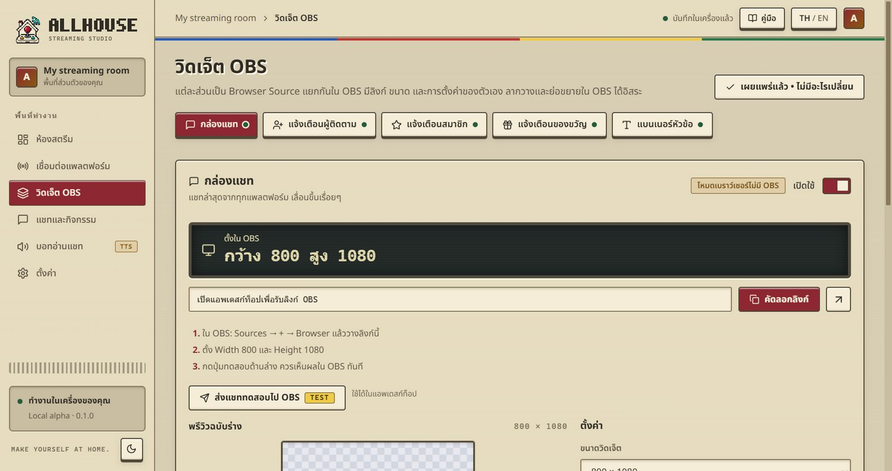
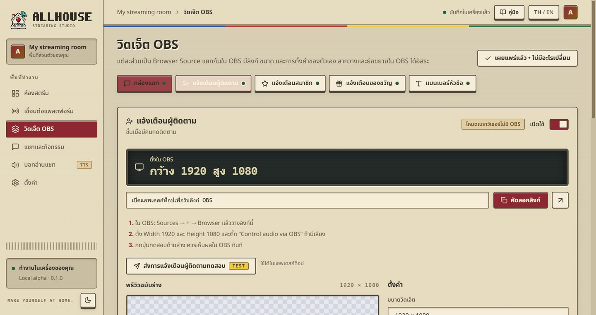
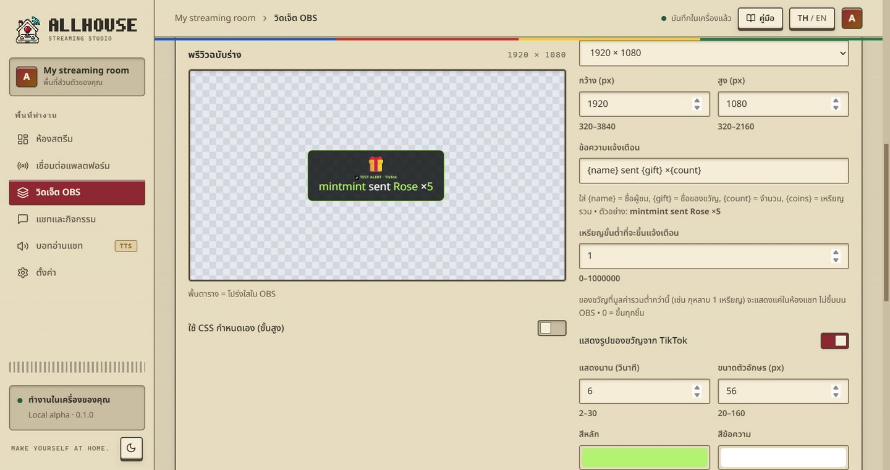
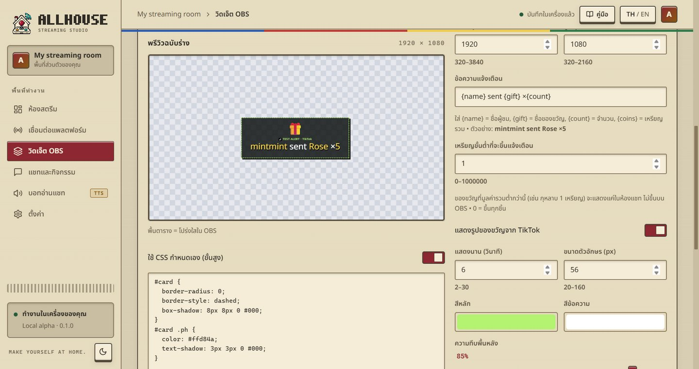

แต่ละส่วนเป็น Browser Source แยกกันใน OBS มีลิงก์ ขนาด และการตั้งค่าของตัวเอง ลากวางและย่อขยายใน OBS ได้อิสระ

| วิดเจ็ต | แสดงอะไร | ขนาดตั้งต้น |
|---|---|---|
| กล่องแชท | แชทล่าสุดจากทุกแพลตฟอร์ม | 800 × 1080 |
| แจ้งเตือนผู้ติดตาม | ขึ้นเมื่อมีคนกดติดตาม | 1920 × 1080 |
| แจ้งเตือนสมาชิก | ขึ้นเมื่อมีคนซับ/สมัครสมาชิก | 1920 × 1080 |
| แจ้งเตือนของขวัญ | ของขวัญ TikTok LIVE | 1920 × 1080 |
| แบนเนอร์หัวข้อ | หัวข้อ ข้อความรอง และรูปของห้อง | 1920 × 1080 |
วิดเจ็ตแจ้งเตือนที่ใส่เสียง ให้ติ๊ก Control audio via OBS ใน Browser Source เสียงจะเข้าไลฟ์และปรับความดังใน OBS Audio Mixer ได้ แนะนำให้เพิ่มแบนเนอร์ก่อน แล้วค่อยเพิ่มแจ้งเตือน การแจ้งเตือนจะได้อยู่ชั้นบนสุด
ลิงก์วิดเจ็ตใช้ได้เฉพาะเครื่องนี้ และควรเก็บเป็นความลับ “เปิดอยู่ 1 หน้า” แปลว่า OBS เปิดหน้าวิดเจ็ตอยู่ ไม่ได้แปลว่ากำลังไลฟ์
แก้อะไรในหน้านี้ พรีวิวจะเปลี่ยนทันที แต่ OBS ยังแสดงฉบับเดิมจนกว่าจะกด เผยแพร่ทุกวิดเจ็ต แท็บที่มีป้ายเหลือง “ยังไม่เผยแพร่” คือวิดเจ็ตที่มีการแก้ค้างอยู่ ไม่ต้องรีเฟรช Browser Source ใน OBS

ข้อความแจ้งเตือนใช้ {name} = ชื่อผู้ชม, {platform} = แพลตฟอร์ม, {message} = ข้อความ เช่น “{name} ได้กดติดตามผึ้งน้อย”แสดงนาน2–30 วินาทีต่อการแจ้งเตือนขนาด / สีขนาดตัวอักษร สีหลัก สีข้อความ ความทึบพื้นหลังแอนิเมชันเด้งขึ้น ค่อยๆ ปรากฏ เลื่อนเข้า หรือไม่มีรูป / GIFPNG, JPG, WebP หรือ GIF เคลื่อนไหว ไม่เกิน 3 MB แสดงเต็มรูปไม่ถูกตัดเสียงแจ้งเตือนMP3, WAV หรือ OGG ไม่เกิน 3 MB กด “ฟังในแอพ” เพื่อลองฟัง และปรับความดังได้การแจ้งเตือนเข้าคิวทีละอัน ถ้ามีหลายคนติดตามพร้อมกันจะขึ้นต่อกันตามลำดับ จัดการคิวได้ที่หน้า “แชทและกิจกรรม”

{gift} {count} {coins}ชื่อของขวัญ จำนวน และเหรียญรวม เช่น “{name} ส่ง {gift} ×{count}”เหรียญขั้นต่ำของขวัญที่มูลค่ารวมน้อยกว่านี้จะขึ้นแค่ในห้องแชท ไม่ขึ้นบน OBS (0 = ขึ้นทุกชิ้น)คอมโบส่งกุหลาบรัวๆ จะแจ้งเตือนครั้งเดียวตอนคอมโบจบ พร้อมจำนวนรวมรูปของขวัญเปิด/ปิดการแสดงรูปของขวัญจาก TikTok บนการแจ้งเตือนกล่องแชทขนาดตัวอักษร, จำนวนข้อความบนจอ, ซ่อนข้อความหลังกี่วินาที, ข้อความใหม่อยู่บนหรือล่าง, สีชื่อ, ความทึบพื้นหลัง, ไอคอนแพลตฟอร์มแบนเนอร์รูปแบบ (Studio / Minimal / Neon), หัวข้อ, ข้อความรอง, สีหลัก, รูป
ทุกวิดเจ็ตเขียน CSS เองได้ เปลี่ยนสี ขอบ ไล่สี เงา หรือใส่แอนิเมชัน อ่านวิธีทั้งหมดได้ที่ คู่มือ CSS กำหนดเอง ถ้าทำพัง ปิดสวิตช์แล้ววิดเจ็ตจะกลับเป็นแบบเดิมทันที
ใต้หน้าวิดเจ็ตมีส่วน “ขั้นสูง” เป็นลิงก์เดียวที่รวมแบนเนอร์ แชท และการแจ้งเตือนไว้ในหน้า 1920 × 1080 เดียว ยังใช้ได้ แต่แนะนำให้ใช้วิดเจ็ตแยกเพราะจัดวางใน OBS ได้อิสระกว่า
Allhouse 0.1.0 · Local alpha · คู่มือนี้อยู่ในเครื่องของคุณ เปิดได้โดยไม่ต้องใช้อินเทอร์เน็ต